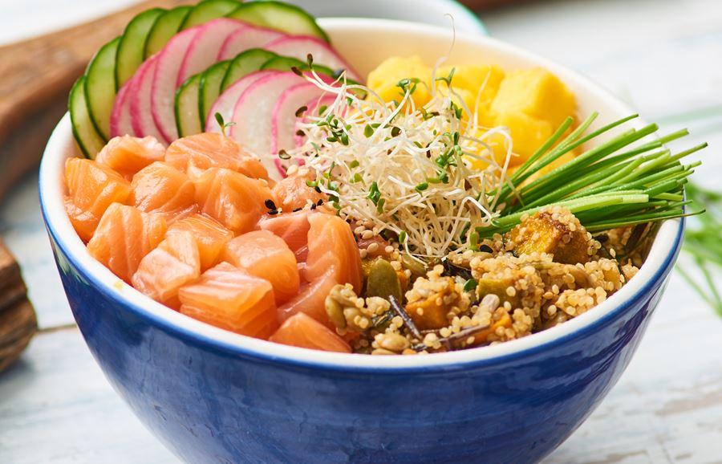

Sabores do Hawaii

Poke
Cubos de peixe cru marinados em molho de soja, óleo de gergelim e algas, servidos sobre arroz.

Lau Lau
Carne de porco e peixe embrulhados em folhas de taro e cozidos lentamente no vapor.

Kalua Pig
Porco defumado em forno subterrâneo (imu) até ficar macio, com sabor defumado marcante.

Spam Musubi
Sanduíche de arroz prensado com fatia de Spam caramelizado, enrolado em alga nori.